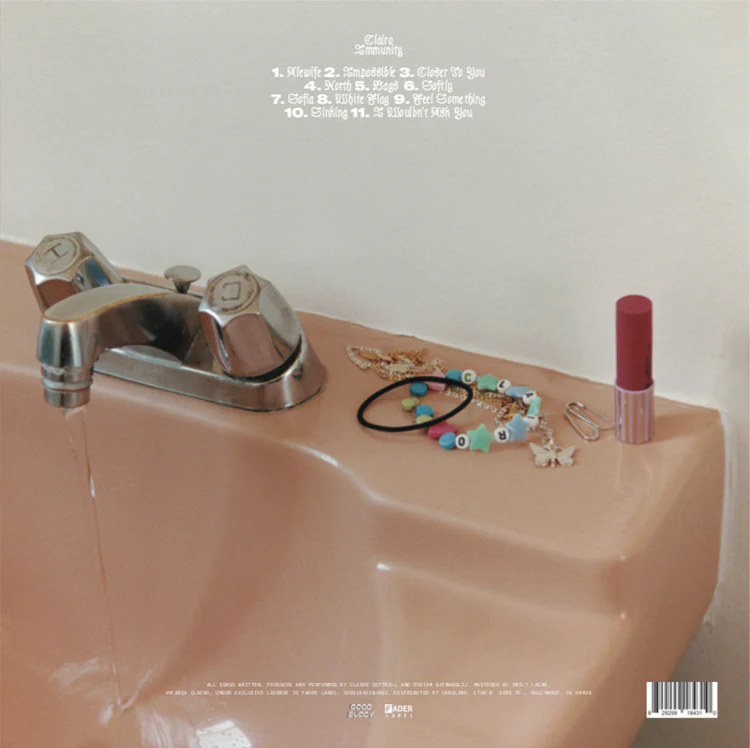
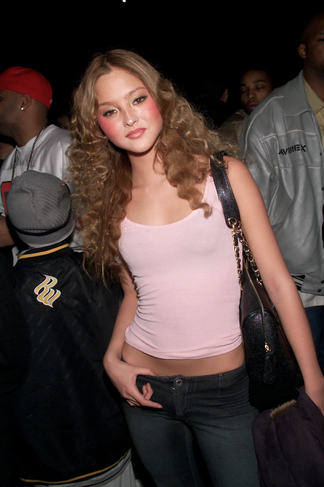
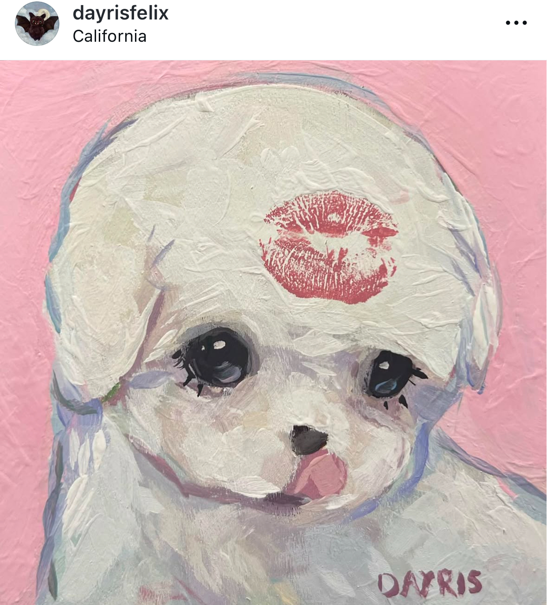

One of my favorite artists is the singer Clairo. I admire her musical talent,specifically her songwriting ability because I emotionally connect with it.
Her visual design choices/aesthetics of her music inspire me too. The fonts and merch designs are creative and have a special charm which is something that I'd like to apply to my design career.

One of my fashion inspirations is Devon Aoki, an actress/model.
I like the clothes and the style she had during the 90s-2000s. I admire Devon Aoki's style and the way she carries herself.

One of my artistic inspirations is an artist on Instagram called @dayrisfelix.
I've always liked drawing and painting, but I've always had trouble having a creative style. Their art is distinctive and cute,
with a nice color palette which is something I like seeing in people's art. As I get into drawing/painting more, I want to be able to do the same.